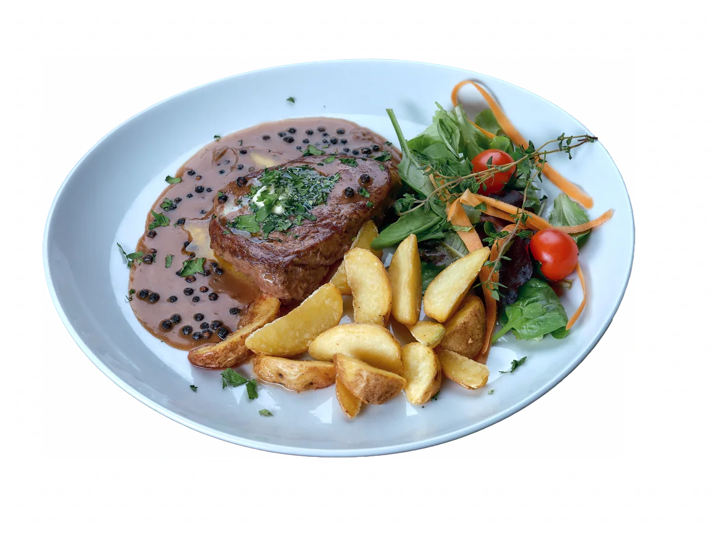
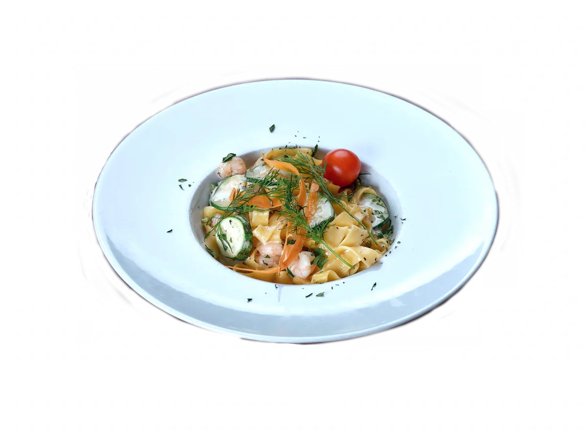
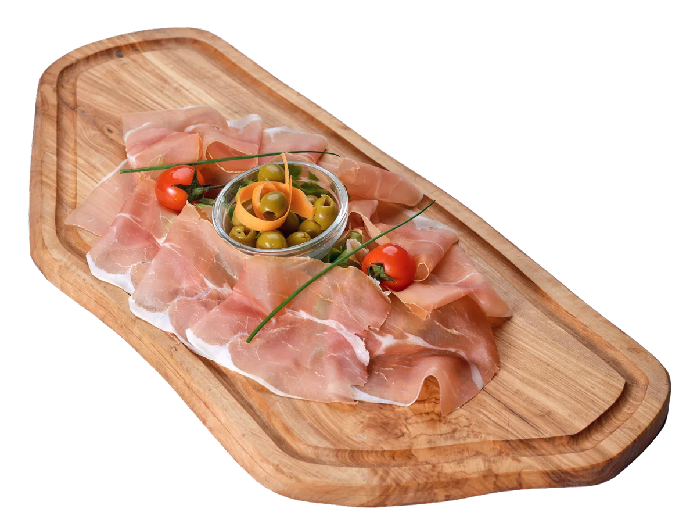
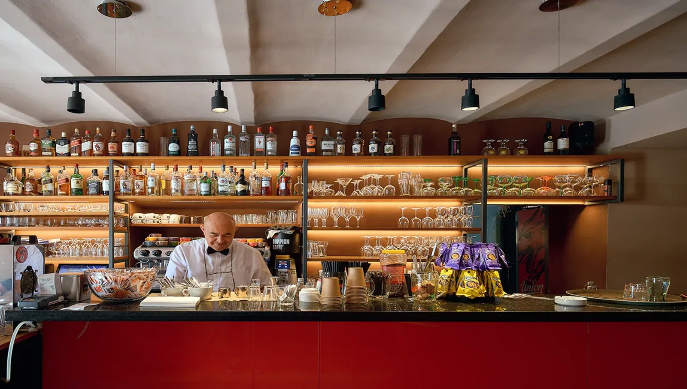

Prome
nada
Pizze, testenine, rižote, ribe in žar. Terasa ob Ljubljanici, pod gradom, v centru Ljubljane.

Kaj pride na mizo.

Biftek v poprovi omakiglavne jedi Kalamari na žaruribje jedi
Kalamari na žaruribje jedi
Široki rezanci z gamberitestenine
Pršut na deskiza začetekJedilni list
Imena jedi so z jedilnega lista na strani restavracije. Cene na predogledu niso navedene; na pravi strani jih vpišemo z vami.
Pizze
- Margerita pelati, sir, mozzarella, origano
- Romana pelati, sir, šunka, origano
- Klasična pelati, sir, šunka, gobe, origano
- Capricoza pelati, sir, šunka, gobe, artičoke, origano
- Calzone pelati, sir, šunka, gobe, kisla smetana, origano
- Kraška pelati, sir, kraški pršut, olive, tržaška omaka, origano
- Gurme pizza Promenada pelati, buffalo mozzarella, češnjev paradižnik, bazilika, olivno olje
Glavne jedi
- Rostbif v jurčkovi omaki
- Rostbif tagliata
- Biftek v poprovi omaki
- Piščančji file na žaru s prilogo
- Piščančji file po dunajsko
- Hišna plošča za 2 osebi svinjski kare, piščančji file, klobasa, čevapčiči
Testenine in rižote
- Široki rezanci z gamberi in bučkami
- Špageti po bolonsko 100 % govedina
- Njoki s piščancem in papriko
- Špinačni tortelini z gorgonzolo, orehi in rukolo
- Peresniki z lososom in koromačem
- Rižota z govedino, grahom in porom
- Rižota z zelenjavo
- Rižota s piščancem in jurčki
Ribje jedi
- File brancina na žaru s prilogo
- Kalamari na žaru s prilogo
- Ocvrti kalamari s prilogo
Sladice
- Tiramisu
- Prekmurska gibanica
V štirih jezikih
- Slovensko
- English
- Deutsch
- Italiano
Nekatere jedi lahko vsebujejo alergene; vprašajte osebje.

Terasa neposredno ob reki.
Mize stojijo na Petkovškovem nabrežju, na pešpoti ob Ljubljanici, s pogledom na Ljubljanski grad. Nekaj korakov od mestnega jedra.

Odlična hrana v centru mesta.
Tako o sebi pravijo sami. Promenada je restavracija, pizzerija in kavarna v enem: bar pod oboki za kavo ali kozarec, mize znotraj in na nabrežju. Po navedbah restavracije: vina slovenskih vinarjev in hišne sladice.
Pripeljite družino, rezervirajte si mizo. Za hišno ploščo za dva in večje skupine se splača poklicati vnaprej.
- Telefon
- +386 40 516 308
- E-pošta
- info@restavracija-promenada.si
Vpišemo ga po vaših podatkih; na predogledu ga namerno ne ugibamo.